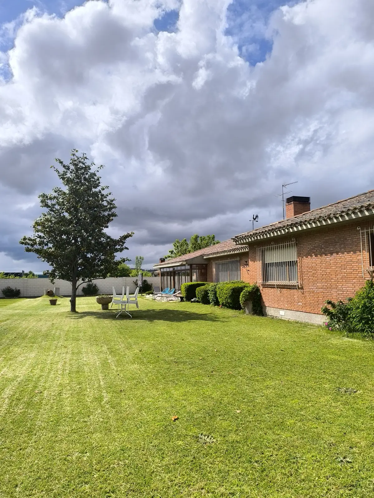

Si se estropea, lo cambiamos en menos de 7 días
Un robot parado en junio es césped alto en una semana. Si el tuyo falla, lo reparamos o lo sustituimos en menos de 7 días [CONFIRMAR PEPO plazo en la provincia].
Un robot que corta tu césped de Valladolid todos los días por una cuota anual desde 660 €/año*, con la instalación, el mantenimiento y las averías a nuestro cargo.
*Césped de hasta 600 m². Hasta 1.000 m², 760 €/año.

El alquiler de robot cortacésped en Valladolid funciona así: pagas una vez al año y el césped deja de ser cosa tuya. Nosotros ponemos el robot, lo dejamos cortando en tu jardín, lo revisamos cuando toca y, si se para, lo arreglamos o lo cambiamos. Un cortacésped automático que tú solo ves salir de la base cada mañana.
Un robot parado en junio es césped alto en una semana. Si el tuyo falla, lo reparamos o lo sustituimos en menos de 7 días [CONFIRMAR PEPO plazo en la provincia].
Cuchillas, limpieza y ajustes entran en la cuota. No te llega una factura aparte por mantener el robot ni por cambiarle una pieza.
Alquiler de cortacésped en Valladolid por tramos de césped: 660 €/año hasta 600 m² · 760 €/año hasta 1.000 m²*. Mismo precio que en cualquier zona [CONFIRMAR PEPO si hay suplemento por desplazamiento]. *Un solo pago anual por transferencia, normalmente tras la instalación. IVA [CONFIRMAR PEPO]. Más de 1.000 m²: consúltanos [CONFIRMAR PEPO].
La instalación de robot cortacésped en Valladolid la hacemos nosotros, no una empresa de transporte. La sede de IRM está en Madrid, así que agrupamos las visitas a la provincia y te damos fecha cerrada antes de salir [CONFIRMAR PEPO frecuencia de desplazamiento]. Ya tenemos robots cortando en Valladolid: el trayecto lo conocemos bien.
Metros de césped, si hay cuesta, piscina o dos zonas, y en qué municipio de Valladolid estás. Con eso te decimos la cuota y la primera fecha disponible.
Vamos en el viaje previsto, miramos el terreno y dejamos un robot cortando de prueba. La demostración cuesta 175 €* y se descuenta de la cuota si contratas.
Colocamos la base, marcamos las zonas por las que pasa el robot y te configuramos la app. Sale de allí cortando y tú pagas la cuota anual por transferencia.
Desde la llamada hasta tener el robot cortando en Valladolid: [CONFIRMAR PEPO] días. Asistencia ante avería en la provincia: [CONFIRMAR PEPO plazo y equipo]. *[CONFIRMAR PEPO cifra exacta y mecánica del descuento].
Nada de zanjas ni cable enterrado: el robot sabe por dónde ir sin obra en tu jardín. Y si tu parcela tiene cuesta, también vale [CONFIRMAR PEPO pendiente máxima].
Vivienda y jardín. En Valladolid el chalet con jardín está casi siempre fuera de la capital: urbanizaciones de parcela mediana en Arroyo, Zaratán o La Cistérniga, casas entre pinares en Boecillo, Aldeamayor o Viana de Cega, y pueblos de la ribera como Tudela o Simancas. Céspedes de 200 a 800 m² con riego automático, piscina y algún árbol: justo el jardín para el que está pensado el renting.
Clima y meses de corte. El clima de Valladolid es continental: inviernos fríos con heladas y veranos calurosos y secos. El césped arranca en abril, crece fuerte en mayo y junio, aguanta el verano si tiene riego y vuelve a tirar en septiembre y octubre. El robot corta a diario toda esa temporada; en invierno descansa en su base mientras el mantenimiento y la asistencia siguen activos.
Lista orientativa [CONFIRMAR PEPO].
¿Tu pueblo no está en la lista? Dinos dónde estás y cuántos metros de césped tienes: en Valladolid vamos donde haya un jardín que cortar y alguien que prefiera un cortacésped que va solo.
Ya hay robots de IRM cortando en jardines de Valladolid. Esto es lo que cuenta uno de sus dueños.

"[Cita real · cómo era cortar antes, qué cambió, qué pasó la vez que llamó a Pepo]"
— [NOMBRE], [MUNICIPIO], [m²] de césped, cliente desde [AÑO] · [PLACEHOLDER · CONFIRMAR PEPO cliente con permiso]
Sí [CONFIRMAR PEPO · lista de municipios]. Trabajamos en toda la provincia de Valladolid, sobre todo en los municipios del entorno de la capital donde hay chalet con jardín: Arroyo de la Encomienda, Simancas, Boecillo, Aldeamayor de San Martín, Laguna de Duero, Tudela de Duero, Zaratán o Cigales. Si tu pueblo no está en la lista, dinos dónde estás y cuántos metros de césped tienes: lo normal es que podamos ir en el siguiente viaje a Valladolid.
El compromiso de IRM es que, si el robot se para, en menos de 7 días esté reparado o sustituido por otro [CONFIRMAR PEPO si el plazo es el mismo en Valladolid y con qué equipo]. Primero lo miramos contigo por teléfono: muchas paradas se resuelven desde la app o con un ajuste que te explicamos en dos minutos. Si hay que ir, vamos. La avería y el robot de sustitución entran en la cuota, no se cobran aparte.
Sí. Las urbanizaciones de chalets entre pinares, como las de Boecillo, Aldeamayor o Viana de Cega, son el tipo de jardín al que más vamos en Valladolid [CONFIRMAR PEPO]: parcelas medianas, césped con riego y alguna zona de sombra bajo los pinos. Si tienes pinos encima del césped, lo vemos en la demostración: el robot trabaja bien con alguna acícula suelta, aunque conviene que no se acumulen. Y si tu urbanización tiene normas de ruido, mejor: el robot no se oye.
Sí: 660 €/año para césped de hasta 600 m² y 760 €/año hasta 1.000 m², igual que en cualquier otra zona donde instalamos un robot cortacésped en alquiler [CONFIRMAR PEPO si hay suplemento por desplazamiento a Valladolid]. La cuota incluye el robot, la instalación sin cable, la app, el mantenimiento y las averías. Lo que cambia respecto a otras zonas no es el precio, sino la agenda: las visitas a Valladolid se organizan por viajes y te damos fecha cerrada antes de salir.
No. Una vez instalado, el robot cortacésped trabaja solo en tu jardín de Valladolid: sale de la base, corta, vuelve y se carga, todos los días, sin que nadie tenga que estar delante. Tú lo ves desde la app y nosotros te atendemos por teléfono ante cualquier duda. La cercanía solo importa el día de la instalación y si hay una avería que no se resuelve a distancia, y para eso está el compromiso de los 7 días.
Depende de cuándo sea el siguiente viaje a Valladolid [CONFIRMAR PEPO frecuencia y plazo]. Al llamar te decimos la primera fecha disponible y la cerramos. Ese día hacemos demostración e instalación en la misma visita si el jardín es apto: base, zonas, app y el robot cortando. No hay segunda visita ni espera a un técnico de fuera. En primavera es cuando más gente se decide: cuanto antes reserves, antes tienes el robot.
En Valladolid el verano es seco y el césped sin riego frena en julio y agosto. El robot no sufre por eso: si hay menos que cortar, corta menos, y desde la app lo programas para que salga menos días o a primera hora, cuando el césped está más fresco. Con riego, el césped crece todo el verano y el robot lo mantiene a la misma altura cada día. El servicio es anual, así que en los dos casos estás cubierto.
No: el renting es anual, con un único pago por transferencia que normalmente se hace después de instalar el robot. En Valladolid el césped se corta más o menos de abril a octubre, pero el mantenimiento, la app y la sustitución en caso de avería siguen activos los doce meses. Si lo quieres ver en cifras, 660 € al año son menos de 2 € al día; para céspedes de hasta 1.000 m², la cuota es de 760 €/año.
Ver el servicio completo (renting de robots cortacésped) → · Precios al detalle →